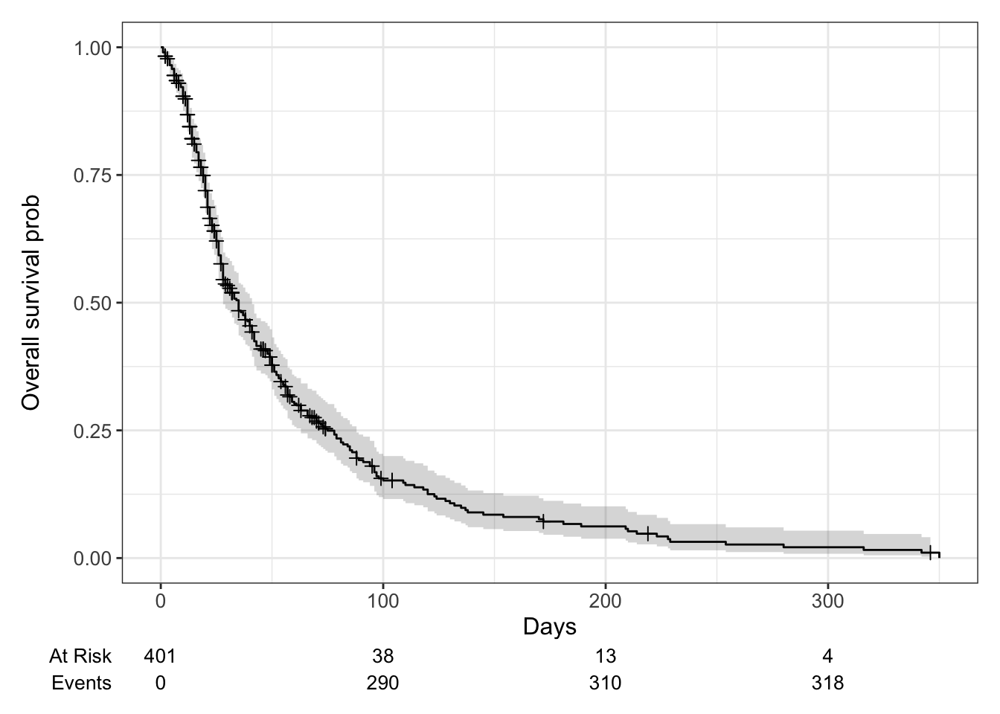
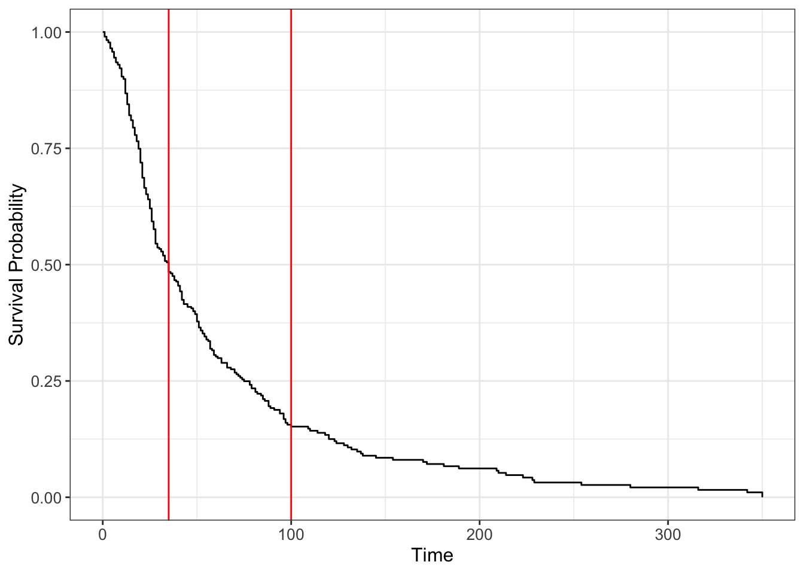

This analysis is in preparation for interviews related to time-to-event analysis. Focus will be put on the procedure (and how to do it in R), as well as interpretation of the results.
The data liggetid was collected at the Geriatric Department at Ullevål Sykehus. Detailed description can be found in part 1 of the case study.
We will focus on the following variables:
admission_year, year of hospital admission
age
sex
admission_from, where 1 = home, 2 = Div. of Medicine, 3 = Div. of Surgery, 4 = Other division, 5 = Other hospital, 6 = Nursing home
stroke, where 1 = yes, 0 = no
los, hospital stay, in days
los <-readRDS('data/los.rds')head(los, 3)
admission_year age sex admission_from stroke los
1 1987 81 female home 0 13
2 1987 96 female home 0 17
3 1987 79 female home 0 6
Simulate times and status
In this analysis we will do the following steps for processing. First we limit the analysis to data from 1985 onwards (not including).
Simulate censor time. We know the time for discharge is given as los - this is the true event time. In this example for hospital LOS, all patients are discharged (with final status 1). However for the purpose of learning, we randomly select 20% of the subjects and assume they are censored. The time for censored is fixed to 0.9 times their final LOS.
Simulate stroke time. stroke is a variable that is typically not measured at baseline, hence it should be treated as a time dependent variable. The time for stroke is fixed at 0.7 of their time (after censoring).
Show the code
suppressMessages(library(dplyr))library(ggplot2)suppressMessages(library(data.table))los <-readRDS('data/los.rds')# table(dlos$admission_from)# to increase readability, processdata.table::setDT(los)# code a status: 1 indicates released. all of themlos$discharge <-1# take those from 1985 onwardslos <- los[admission_year >1985]# we know the true time (los)# now randomly select subjects (20%), make a new time, then mark censorset.seed(1)n <-nrow(los)id_time <-sample(1:n, size =0.2*n, replace = F)los[, time := los]los[id_time, time :=round(0.9*los, digits =0)]# make new statuslos[, status :=1]los[id_time, status :=0] # censored# for those with stroke, simulate a time# if no stroke, the time is same as overall timelos[stroke ==1, time_stroke :=round(0.7*time, digits =0)]los[stroke ==0, time_stroke := time]head(los, 3)
admission_year age sex admission_from stroke los discharge time
<num> <num> <char> <char> <char> <num> <num> <num>
1: 1987 81 female home 0 13 1 13
2: 1987 96 female home 0 17 1 17
3: 1987 79 female home 0 6 1 6
status time_stroke
<num> <num>
1: 1 13
2: 1 17
3: 1 6
Kaplan-Meier analysis
Create KM curve
library(survival)library(ggsurvfit)# from ggsurvfit pkg. using surfit also worksss <-survfit2(Surv(time, status) ~1, data = los)ggsurvfit(ss) +labs(x ='Days', y ='Overall survival prob') +add_confidence_interval() +add_censor_mark() +add_risktable()

x-day survival probability
# beyond 100 dayssummary(survfit(Surv(time, status)~1, data = los), times =100)
Call: survfit(formula = Surv(time, status) ~ 1, data = los)
time n.risk n.event survival std.err lower 95% CI upper 95% CI
100 38 290 0.152 0.0212 0.116 0.2
nrow(los[time>=100]) # n at risk (still alive)
[1] 38
# nrow(los[time<=100]) # this includes censored, 363+1nrow(los[status ==1& time <=100]) # n event (already happened)
[1] 290
# n at risk: 38; n event 290, p = 0.15
401 total, 38 at risk, within the 364 (-1), 290 died
Naive but incorrect way of calculating: 1-290/401 = 27.7%. This over-estimates how many are alive, as (364-290) = 74 are censored and we do not know the outcome.
Median survival time
Median survival time means half of the subjects have events happen before, and half after. It corresponds to the time where survival probability is 0.5.
The median survival time is higher than using median(time_to_event) on those with outcome. It is intuitive because with censored data there are time periods that are not observed, which are ignored by median().
survfit(Surv(time, status) ~1, data = los)
Call: survfit(formula = Surv(time, status) ~ 1, data = los)
n events median 0.95LCL 0.95UCL
[1,] 401 321 35 28 41
median(los[status ==1, time]) # only compute time for uncensored
[1] 28
Compare with the complete case when there’s no censoring. We use discharge as the outcome status, all subjects have 1. The time variable is los which is the true time. Now these two should be consistent.
survfit(Surv(los, discharge) ~1, data = los)
Call: survfit(formula = Surv(los, discharge) ~ 1, data = los)
n events median 0.95LCL 0.95UCL
[1,] 401 401 28 26 33
median(los$los)
[1] 28
ggsurvfit(ss) +geom_vline(xintercept =c(100, 35), col ='red')

Interpretation
Risk of ignoring censored subjects
over-estimated (higher) survival probability calculated as (1 - dead/n), since the numerator does not include censored subjects whose outcome is unknown.
under-estimated (lower) median survival time, since their time before event will prolong the survival time.